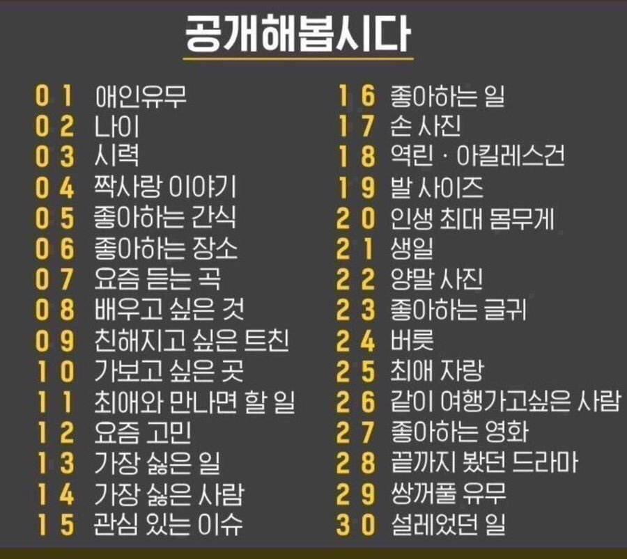

01.
X
02.
내 나이 21살 날 방해하는 것들은 모든지 파괴한다
03.
한조 대기중
05.
도미덮밥맛 감자칩
06.
진주시 씽씽게임랜드
07.
Snail's House의
Ordinary Songs EP
09.
있는 트친 전부
11.
최애가 저인데요?
16.
일이니까 캐드질
19.
260
20.
지금 몸무게(55kg)
21.
死月 死日
4월 4일
27.
현대전 영화 같은 총기 고증 좋은 영화
28.
보이스2
30.
트친만난 일